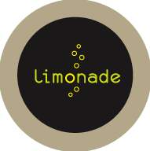
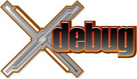

Plan prezentacji
- Czym jest PHP?
- Zarys historyczny
- Podstawy
- Zalety i wady
- Podsumowanie
Czym jest PHP?
- PHP: Hypertext Preprocessor
- język skryptowy oparty na składni C, Java, Perl
- open source
- ogromnie popularny
- głównie wykorzystywany "w rozwoju sieci"
- "PHP is a popular general-purpose scripting language that is especially suited to web development. Fast, flexible and pragmatic, PHP powers everything from your blog to the largest social networking site in the world."
Zarys historyczny
1994
1997 - Zeev Suraski & Andi Gutmans
PHP
<!--getenv HTTP_USER_AGENT--> <!--ifsubstr $exec_result Mozilla--> Hey, you are using Netscape! <!--endif-->
class Title {
var $mTextform = '';
var $mDbkeyform = '';
function getTitleFromId( $id ) {
// ...
}
}
class WallController extends ArticleCommentsModule {
private $helper;
protected $sortingType = 'index';
const WALL_MESSAGE_RELATIVE_TIMESTAMP = 604800;
public function __construct() {
// ...
}
public function init() {
// ...
}
}
Podstawy
Podstawowa składnia
<?php ... ?>
<script language="php"> ... </script>
<? ... ?>
<% ... %>
<p>This is going to be ignored.</p> <?= 'While this is going to be parsed.'; ?> <p>This will also be ignored.</p>
Podstawowa składnia
<?php
if ($expression) {
?>
<strong>This is true.</strong>
<?php
} else {
?>
<strong>This is false.</strong>
<?php
}
?>
<?php if( $expression ): ?>
<strong>This is true.</strong>
<?php else: ?>
<strong>This is false.</strong>
<?php endif; ?>
Zmienne
- $variable, $_var, $v4ri5bl3,
- $variable != $VARIABLE
- predefiniowane zmienne i zmienne superglobalne:
- $GLOBALS,
- $_SERVER,
- $_GET,
- $_POST,
- $_FILES,
- $_COOKIE,
- $_SESSION,
- $_REQUEST,
- $_ENV.
Typy danych
-
Cztery typy proste:
- boolean
- integer
- float
- string
-
Dwa typy złożone:
- array
- object
-
Dwa typy specjalne:
- resource
- NULL
Live coding
Zalety i wady
Łatwy. Szybko.
Może się to jednak skończyć źle...
If you’re unaware of the usual beef most developers have with PHP, it tends to revolve around:
- ugly syntax,
- lack of some necessary features that other languages have (prior to 5.3, namespacing, closures),
- inconsistent function naming, usage, and other quirks,
- mix of procedural and OO-ness,
- the fact that 80-90% of PHP projects are probably gigantic piles of shit.
Mikroframeworki
| SILEX |  | |
Frameworki
CodeIgniter | ||
Narzędzia
| PHP Lint | ||
|  |
Xdebug
Czy warto zainteresować się PHP?
Praca
| php | 35 | 514 | 74 | 372 |
| python | 29 | 165 | 72 | 201 |
| ruby | 10 | 80 | 39 | 76 |
Dane z dnia 11 listopada 2013.
If you are capable of making wise software design decisions, PHP is a great choice to build your web application with.
Dziękuję!